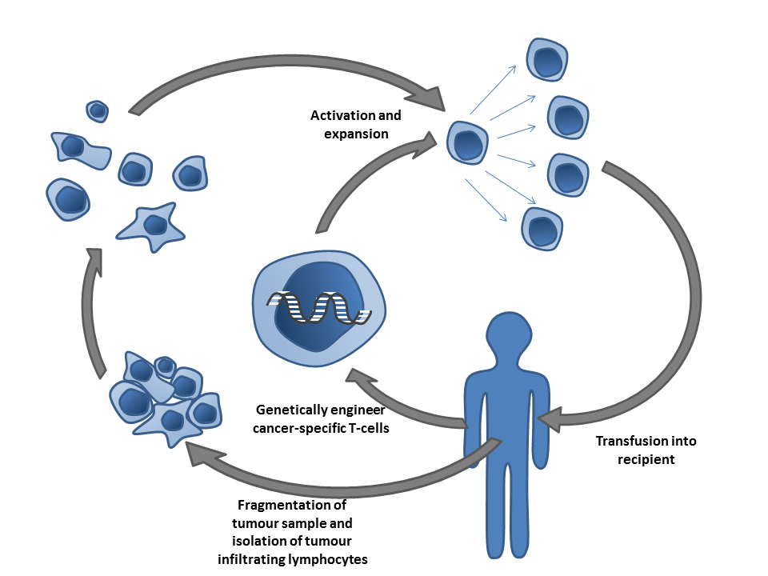
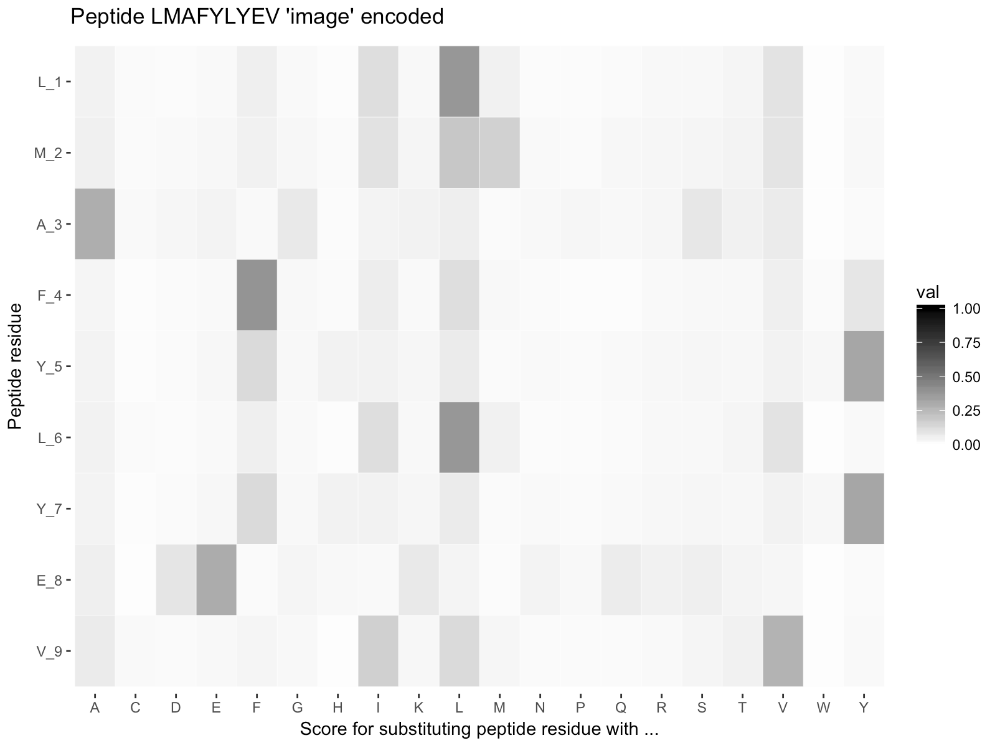
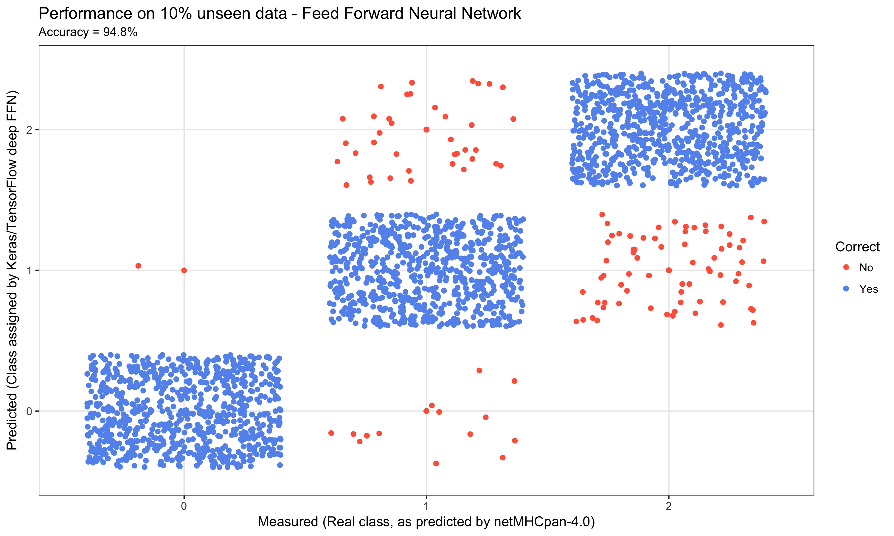
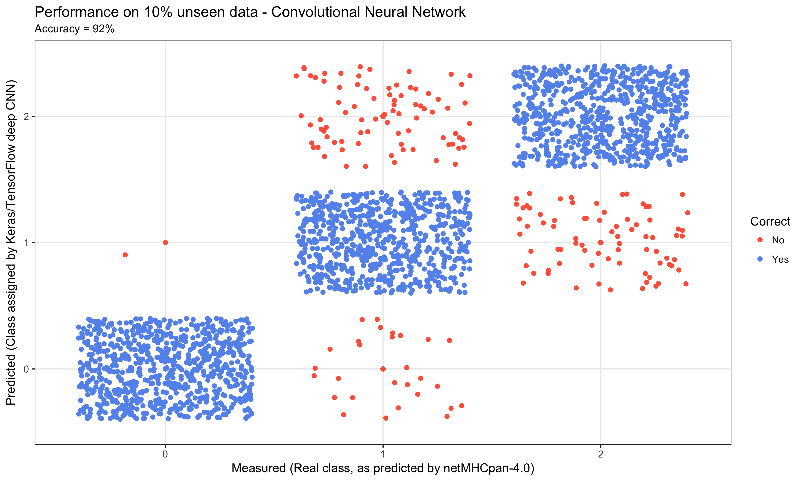

Introduction
In my research, I apply deep learning to unravel molecular interactions in the human immune system. One application of my research is within cancer immunotherapy (Immuno-oncology or Immunooncology) - a cancer treatment strategy, where the aim is to utilize the cancer patient’s own immune system to fight the cancer.
The aim of this post is to illustrates how deep learning is successfully being applied to model key molecular interactions in the human immune system. Molecular interactions are highly context dependent and therefore non-linear. Deep learning is a powerful tool to capture non-linearity and has therefore proven invaluable and highly successful. In particular in modelling the molecular interaction between the Major Histocompability Complex type I (MHCI) and peptides (The state-of-the-art model netMHCpan identifies 96.5% of natural peptides at a very high specificity of 98.5%).
Adoptive T-cell therapy
Some brief background before diving in. Special immune cells (T-cells) patrol our body, scanning the cells to check if they are healthy. On the surface of our cells is the MHCI - a highly specialized molecular system, which reflects the health status inside our cells. This is done by displaying small fragments of proteins called peptides, thus reflecting the inside of the cell. T-cells probe these molecular displays to check if the peptides are from our own body (self) or foreign (non-self), e.g. from a virus infection or cancer. If a displayed peptide is non-self, the T-cells has the power to terminate the cell.
 Simon Caulton, Adoptive T-cell therapy, CC BY-SA 3.0
{kind=link}
Adoptive T-cell therapy is a form of cancer immunotherapy that aims to isolate tumor infiltrating T-cells from the tumor in the patient, possibly genetically engineer them to be cancer-specific, grow them in great numbers and reintroduce them into the body to fight the cancer. In order to terminate cancer cells, the T-cell needs to be activated by being exposed to tumor peptides bound to MHCI (pMHCI). By analyzing the tumor genetics, relevant peptides can be identified and depending on the patients particular type of MHCI, we can predict which pMHCI are likely to be present in the tumor in the patient and thus which pMHCIs should be used to activate the T-cells.
Peptide Classification Model
For this use case, we applied three models to classify whether a given peptide is a ‘strong binder’ SB, ‘weak binder’ WB or ‘non-binder’ NB. to MHCI (Specific type: HLA-A*02:01). Thereby, the classification uncovers which peptides, will be presented to the T-cells. The models we tested were:
- A deep feed forward fully connected ANN
- A convolutional ANN (connected to a FFN)
- A random forest (for comparison)
Next, we’ll dive into building the artificial neural network. If you want to a more detailed explanation of cancer immunotherapy and how it interacts with the human immune system before going further, see the primer on cancer immunotherapy at the end of the post.
Prerequisites
This example utilizes the keras package, several tidyverse packages, as well as the ggseqlogo and PepTools packages. You can install these packages as follows:
# Keras + TensorFlow and it's dependencies
install.packages("keras")
library(keras)
install_keras()
# Tidyverse (readr, ggplot2, etc.)
install.packages("tidyverse")
# Packages for sequence logos and peptides
devtools::install_github("omarwagih/ggseqlogo")
devtools::install_github("leonjessen/PepTools")
We can now load all of the packages we need for this example:
Peptide Data
The input data for this use case was created by generating 1,000,000 random 9-mer peptides by sampling the one-letter code for the 20 amino acids, i.e. ARNDCQEGHILKMFPSTWYV, and then submitting the peptides to MHCI binding prediction using the current state-of-the-art model netMHCpan. Different variants of MHCI exists, so for this case we chose HLA-A*02:01. This method assigns ‘strong binder’ SB, ‘weak binder’ WB or ‘non-binder’ NB to each peptide.
Since n(SB) < n(WB) << n(NB), the data was subsequently balanced by down sampling, such that n(SB) = n(WB) = n(NB) = 7,920. Thus, a data set with a total of 23,760 data points was created. 10% of the data points were randomly assigned as test data and the remainder as train data. It should be noted that since the data set originates from a model, the outcome of this particular use case will be a model of a model. However, netMHCpan is very accurate (96.5% of natural ligands are identified at a very high specificity 98.5%).
In the following each peptide will be encoded by assigning a vector of 20 values, where each value is the probability of the amino acid mutating into 1 of the 20 others as defined by the BLOSUM62 matrix using the pep_encode() function from the PepTools package. This way each peptide is converted to an ‘image’ matrix with 9 rows and 20 columns.
Let’s load the data:
pep_file <- get_file(
"ran_peps_netMHCpan40_predicted_A0201_reduced_cleaned_balanced.tsv",
origin = "https://git.io/vb3Xa"
)
pep_dat <- read_tsv(file = pep_file)
The example peptide data looks like this:
pep_dat %>% head(5)
# A tibble: 5 x 4
peptide label_chr label_num data_type
<chr> <chr> <int> <chr>
1 LLTDAQRIV WB 1 train
2 LMAFYLYEV SB 2 train
3 VMSPITLPT WB 1 test
4 SLHLTNCFV WB 1 train
5 RQFTCMIAV WB 1 train Where peptide is the 9-mer peptides, label_chr defines whether the peptide was predicted by netMHCpan to be a strong-binder SB, weak-binder WB or NB non-binder to HLA-A*02:01.
label_num is equivalent to label_chr, such that NB = 0, WB = 1 and SB = 2. Finally data_type defines whether the particular data point is part of the train set used to build the model or the ~10% data left out test set, which will be used for final performance evaluation.
The data has been balanced, as shown in this summary:
# A tibble: 6 x 3
# Groups: label_chr [?]
label_chr data_type n
<chr> <chr> <int>
1 NB test 782
2 NB train 7138
3 SB test 802
4 SB train 7118
5 WB test 792
6 WB train 7128We can use the ggseqlogo package to visualize the sequence motif for the strong binders using a sequence logo. This allows us to see which positions in the peptide and which amino acids are critical for the binding to MHC (Higher letters indicate more importance):

From the sequence logo, it is evident, that L,M,I,V are found often at p2 and p9 amongst the strong binders. In fact these position are referred to as the anchor positions, which interact with the MHCI. The T-cell on the other hand, will recognize p3-p8.
Data Preparation
We are creating a model f, where x is the peptide and y is one of three classes SB, WB and NB, such that f(x) = y. Each x is encoded into a 2-dimensional ‘image’, which we can visualize using the pep_plot_images() function:

To feed data into a neural network we need to encode it as a multi-dimensional array (or “tensor”). For this dataset we can do this with the PepTools::pep_encode() function, which takes a character vector of peptides and transforms them into a 3D array of ‘total number of peptides’ x ‘length of each peptide (9)’ x ‘number of unique amino acids (20)’. For example:
num [1:2, 1:9, 1:20] 0.0445 0.0445 0.0445 0.0445 0.073 ...Here’s how we transform the data frame into 3-D arrays of training and test data:
x_train <- pep_dat %>% filter(data_type == 'train') %>% pull(peptide) %>% pep_encode
y_train <- pep_dat %>% filter(data_type == 'train') %>% pull(label_num) %>% array
x_test <- pep_dat %>% filter(data_type == 'test') %>% pull(peptide) %>% pep_encode
y_test <- pep_dat %>% filter(data_type == 'test') %>% pull(label_num) %>% array
To prepare the data for training we convert the 3-d arrays into matrices by reshaping width and height into a single dimension (9x20 peptide ‘images’ are flattened into vectors of lengths 180):
x_train <- array_reshape(x_train, c(nrow(x_train), 9, 20, 1))
x_test <- array_reshape(x_test, c(nrow(x_test), 9, 20, 1))
The y data is an integer vector with values ranging from 0 to 2. To prepare this data for training we one-hot encode the vectors into binary class matrices using the Keras to_categorical function:
y_train <- to_categorical(y_train, num_classes = 3)
y_test <- to_categorical(y_test, num_classes = 3)
Defining the Model
The core data structure of Keras is a model, a way to organize layers. The simplest type of model is the sequential model, a linear stack of layers. We begin by creating a sequential model and then adding layers using the pipe (%>%) operator:
model <- keras_model_sequential() %>%
layer_dense(units = 180, activation = 'relu', input_shape = 180) %>%
layer_dropout(rate = 0.4) %>%
layer_dense(units = 90, activation = 'relu') %>%
layer_dropout(rate = 0.3) %>%
layer_dense(units = 3, activation = 'softmax')
A dense layer is a standard neural network layer with each input node is connected to an output node. A dropout layer sets a random proportion of activations from the previous layer to 0, which helps to prevent overfitting.
The input_shape argument to the first layer specifies the shape of the input data (a length 180 numeric vector representing a peptide ‘image’). The final layer outputs a length 3 numeric vector (probabilities for each class SB, WB and NB) using a softmax activation function.
We can use the summary() function to print the details of the model:
summary(model)
Layer (type) Output Shape Param #
================================================================================
dense_1 (Dense) (None, 180) 32580
________________________________________________________________________________
dropout_1 (Dropout) (None, 180) 0
________________________________________________________________________________
dense_2 (Dense) (None, 90) 16290
________________________________________________________________________________
dropout_2 (Dropout) (None, 90) 0
________________________________________________________________________________
dense_3 (Dense) (None, 3) 273
================================================================================
Total params: 49,143
Trainable params: 49,143
Non-trainable params: 0
________________________________________________________________________________Next, we compile the model with appropriate loss function, optimizer, and metrics:
model %>% compile(
loss = 'categorical_crossentropy',
optimizer = optimizer_rmsprop(),
metrics = c('accuracy')
)
Training and Evaluation
We use the fit() function to train the model for 150 epochs using batches of 50 peptide ‘images’:
history = model %>% fit(
x_train, y_train,
epochs = 150,
batch_size = 50,
validation_split = 0.2
)
We can visualize the training progress by plotting the history object returned from fit():
plot(history)

We can now evaluate the model’s performance on the original ~10% left out test data:
perf = model %>% evaluate(x_test, y_test)
perf
$loss
[1] 0.2449334
$acc
[1] 0.9461279We can also visualize the predictions on the test data:
acc = perf$acc %>% round(3)*100
y_pred = model %>% predict_classes(x_test)
y_real = y_test %>% apply(1,function(x){ return( which(x==1) - 1) })
results = tibble(y_real = y_real %>% factor, y_pred = y_pred %>% factor,
Correct = ifelse(y_real == y_pred,"yes","no") %>% factor)
title = 'Performance on 10% unseen data - Feed Forward Neural Network'
xlab = 'Measured (Real class, as predicted by netMHCpan-4.0)'
ylab = 'Predicted (Class assigned by Keras/TensorFlow deep FFN)'
results %>%
ggplot(aes(x = y_pred, y = y_real, colour = Correct)) +
geom_point() +
ggtitle(label = title, subtitle = paste0("Accuracy = ", acc,"%")) +
xlab(xlab) +
ylab(ylab) +
scale_color_manual(labels = c('No', 'Yes'),
values = c('tomato','cornflowerblue')) +
geom_jitter() +
theme_bw()

The final result was a performance on the 10% unseen data of just short of 95% accuracy.
Convolutional Neural Network
In order to test a more complex architecture, we also implemented a Convolutional Neural Network. To make the comparison, we repeated the data preparation as described above and only changed the architecture by including a single 2d convolutional layer and then feeding that into the same architecture as the FFN above:
model <- keras_model_sequential() %>%
layer_conv_2d(filters = 32, kernel_size = c(3,3), activation = 'relu',
input_shape = c(9, 20, 1)) %>%
layer_dropout(rate = 0.25) %>%
layer_flatten() %>%
layer_dense(units = 180, activation = 'relu') %>%
layer_dropout(rate = 0.4) %>%
layer_dense(units = 90, activation = 'relu') %>%
layer_dropout(rate = 0.3) %>%
layer_dense(units = 3, activation = 'softmax')

This resulted in a performance on the 10% unseen data of 92% accuracy.
One might have expected the CNN to be able to better capture the information in the peptide ‘images’. There is however a crucial difference between the peptide ‘images’ and the e.g. MNIST dataset. The peptide ‘images’ do not contain edges and spatially arranged continuous structures, rather they are a set of pixels with p2 always at p2 and likewise for p9, which are determinants for binding.
Random Forest
Knowing that deep ;earning is not necessarily the right tool for all prediction tasks, we also created a random forest model on the exact same data using the randomForest package.
The x and y training data was prepared slightly different using PepTools::pep_encode_mat
# Setup training data
target <- 'train'
x_train <- pep_dat %>% filter(data_type==target) %>% pull(peptide) %>%
pep_encode_mat %>% select(-peptide)
y_train <- pep_dat %>% filter(data_type==target) %>% pull(label_num) %>% factor
# Setup test data
target <- 'test'
x_test <- pep_dat %>% filter(data_type==target) %>% pull(peptide) %>%
pep_encode_mat %>% select(-peptide)
y_test <- pep_dat %>% filter(data_type==target) %>% pull(label_num) %>% factor
The random forest model was then run using 100 trees like so:
rf_classifier <- randomForest(x = x_train, y = y_train, ntree = 100)
The results of the model were collected as follows:
We can then visualize the performance as we did with the FFN and the CNN:
title = "Performance on 10% unseen data - Random Forest"
xlab = "Measured (Real class, as predicted by netMHCpan-4.0)"
ylab = "Predicted (Class assigned by random forest)"
f_out = "plots/03_rf_01_results_3_by_3_confusion_matrix.png"
results %>%
ggplot(aes(x = y_pred, y = y_real, colour = Correct)) +
geom_point() +
xlab(xlab) +
ylab(ylab) +
ggtitle(label = title, subtitle = paste0("Accuracy = ", acc,"%")) +
scale_color_manual(labels = c('No', 'Yes'),
values = c('tomato','cornflowerblue')) +
geom_jitter() +
theme_bw()

Conclusion
In this post you have been shown how we build 3 models: A Feed Forward Neural Network (FFN), a Convolutional Neural Network (CNN) and a Random Forest (RF). Using the same data, we obtained performances of ~95%, ~92% and ~82% for the FFN, CNN and RF respectively. The R-code for these models are available here:
It is evident that the deep learning models capture the information in the system much better than the random forest model. However, the CNN model didn’t not perform as well as the straightforward FFN. This illustrates one of the pitfalls of deep learning - blind alleys. There are a huge number of architectures available, and when combined with hyperparameter tuning the potential model space is breathtakingly large.
To increase the likelihood of finding a good architecture and the right hyper-parameters it is important to know and understand the data you are modeling. Also, if possible include several sources of data. For the case of peptide-MHC interaction, we include not only information of the strength of the binding as measured in the laboratory, but also information from actual human cells, where peptide-MHC complexes are extracted and analysed.
It should be noted that when we build models in the research group, a lot of work goes into creating balanced training and test sets. Models are also trained and evaluated using cross-validation, usually 5-fold. We then save each of the five models and create an ensemble prediction - wisdom-of-the-crowd. We are very careful to avoiding overfitting as this of course decreases the models extrapolation performance.
There is no doubt that deep learning already plays a major role in unraveling the complexities of the human immune system and associated diseases. With the release of TensorFlow by Google along with the keras and tensorflow R packages we now have the tools available in R to explore this frontier.
Primer on Cancer Immunotherapy
Here is an elaborated background on DNA, proteins and cancer 1. However, brief and simplified as this is naturally a hugely complex subject.
DNA
The cell is the basic unit of life. Each cell in our body harbors ~2 meters (6 feet) of DNA, which is identical across all cells. DNA makes up the blue print for our body - our genetic code - using only four nucleic acids (hence the name DNA = DeoxyriboNucleic Acid). We can represent the genetic code, using: a,c,g and t. Each cell carries ~3,200,000,000 of these letters, which constitute the blue print for our entire body. The letters are organised into ~20,000 genes and from the genes we get proteins. In Bioinformatics, we represent DNA sequences as repeats of the four nucleotides, e.g. ctccgacgaatttcatgttcagggatagct....
Proteins
Comparing with a building - if DNA is the blue print of how to construct a building, then the proteins are the bricks, windows, chimney, plumbing etc. Some proteins are structural (like a brick), whereas others are functional (like a window you can open and close). All ~100,000 proteins in our body are made by of only 20 small molecules called amino acids. Like with DNA, we can represent these 20 amino acids using: A,R,N,D,C,Q,E,G,H,I,L,K,M,F,P,S,T,W,Y and V (note lowercase for DNA and uppercase for amino acids). The average size of a protein in the human body ~300 amino acids and the sequence is the combination of the 20 amino acids making up the protein written consecutively, e.g.: MRYEMGYWTAFRRDCRCTKSVPSQWEAADN.... The attentive reader will notice, that I mentioned ~20,000 genes, from which we get ~100,000 proteins. This is due to the DNA in one gene being able to join in different ways and thus produce more than one protein.
Peptides
A peptide is a small fragment of a protein of length ~5-15 amino acids. MHCI predominantly binds peptides containing 9 amino acids - A so called 9-mer. Peptides play a crucial role in the monitoring of cells in our body by the human immune system. The data used in this use case consist solely of 9-mers.
The Human Immune System
Inside each cell, proteins are constantly being produced from DNA. In order not to clutter the cell, proteins are also constantly broken down into peptides which are then recycled to produce new proteins. Some of these peptides are caught by a system and bound to MHCI (Major Histocompatibility Complex type 1, MHCI) and transported from inside of the cell to the outside, where the peptide is displayed. The viewer of this display is the human immune system. Special immune cells (T-cells) patrol the body, looking for cells displaying unexpected peptides. If a displayed peptide is unexpected, the T-cells will terminate the cell. The T-cells have been educated to recognize foreign peptides (non-self) and ignore peptides which originate from our own body (self). This is the hallmark of the immune system - Protecting us by distinguishing self from non-self. I the immune system is not active enough and thus fails to recognize non-self arising from an infection it is potentially fatal. On the other hand if the immune system is too active and starts recognizing not only non-self, but also self, you get autoimmune disease, which likewise is potentially fatal.
Cancer
Cancer arises when errors (mutations) occur inside the cell, resulting in changed proteins. This means that if the original protein was e.g. MRYEMGYWTAFRRDCRCTKSVPSQWEAADN..., then the new erroneous protein could be e.g. MRYEMGYWTAFRRDCRCTKSVPSQWEAADR.... The result of this is that the peptide displayed on the cell surface is altered. The T-cells will now recognize the peptide as unexpected and terminate the cell. However, the environment around a cancer tumor is very hostile to the T-cells, which are supposed to recognize and terminate the cell.
Cancer Immunotherapy aims at taking a sample of the tumor and isolate the T-cells, grow them in great numbers and then reintroduce them into the body. Now, despite the hostile environment around the tumor, sheer numbers result in the T-cells out competing the tumor. A special branch of cancer immunotherapy aims at introducing T-cells, which have been specially engineered to recognize a tumor. However, in this case it is of utmost importance to ensure that the T-cell does indeed recognize the tumor and nothing else than the tumor. If introduced T-cells recognize healthy tissue, the outcome can be fatal. It is therefore extremely important to understand the molecular interaction between the sick cell, i.e. the peptide and the MHCI, and the T-cell.
Our peptide classification model illustrates how deep learning is being applied to increase our understanding of the molecular interactions governing the activation of the T-cells.
Inside Life Science, Genetics by the Numbers: https://publications.nigms.nih.gov/insidelifescience/genetics-numbers.html↩︎